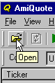
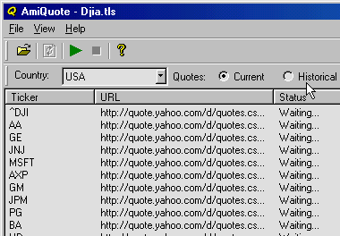
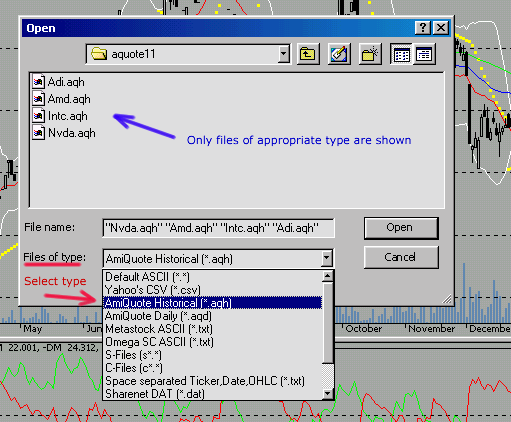

The purpose of this document is to explain how to use AmiQuote and AmiBroker in order to obtain quotes from Yahoo Finance and Quote.com.
AmiQuote is a companion program to AmiBroker charting/analysis software. The main purpose of AmiQuote is to simplify and automate downloading daily and historical quotation data from free Yahoo! Finance (USA, major European exchanges and some other countries), Quote.com (USA only), MSN (USA and some European exchanges), Integratir (US stocks), Forex (Finam's free site)
Yahoo provides data in "Historical" and "Current" modes of AmiQuote. Quote.com provides data in "Intraday" mode of AmiQuote.
A ticker list is a simple text file which lists line by line the tickers you want to import. The AmiQuote ticker list file has the .TLS extension. AmiQuote comes with pre-written ticker lists for components of the main NYSE and NASDAQ indices and a number of European indices/markets. Additional ticker lists are available on the starter page at: http://www.amibroker.com/starter/. You can use those pre-written ticker lists, or you can customize them or write your own. In order to edit an existing .TLS file or write a completely new one, all you need is a plain text editor such as Notepad or any other plain ASCII editor (not MS Word!). All you have to do is to write tickers you want to import line by line (single ticker in single line) and save the file. Please make sure that you are saving the file with the .TLS extension. Otherwise, AmiQuote will not load this file.
Please note that Yahoo uses suffixes for non-US stocks. So, in order to get quotes for non-US symbols, you would need to add the appropriate suffix to the ticker symbol. The suffixes in alphabetical order are (click on a link to get the symbol list for each exchange): .AS - Amsterdam, .AX - Australia (ASX), .BC - Barcelona, .BE - Berlin, .BO - Bombay, .BM - Bremen, .BR - Brussels, .BA - Buenos Aires, .CL - Calcutta, .CR - Caracas, .V - CDNX, .CO - Copenhagen, .D - Dusseldorf, .F - Frankfurt, .H - Hamburg, .HA - Hanover, .HK - Hong Kong, .I - Ireland, .JK - Jakarta, .KA - Karachi, .KQ - Kosdaq, .KS - KSE, .KL - Kuala Lumpur, .L - London, .LM - Lima, .LS - Lisbon, .MA - Madrid, .MX - Mexico, .MI - Milan, .MU - Munich, .NS - NSE, .NZ - New Zealand, .OL - Oslo, .PA - Paris, .SN - Santiago, .SS - Shanghai, .SZ - Shenzhen, .ST - Stockholm, .SG - Stuttgart, .TW - Taiwan, .TA - Tel Aviv, .TO - Toronto, .VA - Valencia, .VI - Vienna, .DE - XETRA, .S - Zurich.
Please note that Yahoo and Quote.com also use different symbols for indices. The main difference is that Yahoo uses ^ (dash) prefix and Quote.com uses $ (dollar) prefix.
For a list of indices provided by Yahoo please click here.
For a list of indices provided by Lycos/Quote.com please click here. Please note that recently Lycos/Quote.com stopped delivering free quotes and you need to have a Livecharts subscription ($9.95/month) in order to use it. For more details, see this Knowledge Base article.
For a list of symbols provided by MSN please click here.
|
In order to download the data, please launch AmiQuote. Then, please click on the "Open" button in the toolbar (or choose File->Open menu) as shown in the picture on the right. From the file dialog, please choose a .TLS file (for example DIJA.TLS)
and click the Open button. Then you will see the main screen
of AmiQuote filled with the list of tickers loaded, as shown in the picture
below. |
 |
 |
|
Choose the appropriate Data Source
- Yahoo Historical - allows you to download end-of-day histories up to
the current day (current day data appear a few hours after session end)
- Yahoo Current - allows you to download current day quotes (15-min
delayed) during the trading session
- Lycos/Quote.com Intraday - allows you to download intraday and daily
historical data (1-min bars and up) - for US stocks/futures only. If you have
chosen
this mode,
you should also select the bar interval (see the limitations described below)
- requires a Livecharts subscription ($9.95/month)
- MSN Historical - allows you to download end-of-day histories up to
the current day (current day data appear a few hours after session end)
- Forex - allows you to download end-of-day and intraday (registered
version) histories for the following currency pairs: EURCHF, EURGBP, EURJPY,
EURUSD, GBPUSD, USDCHF, USDJPY
After choosing the correct options, please click on the green arrow (or use File -> Start Download menu). The download process will begin. AmiQuote will display progress messages and status information, including the number of completed downloads and the number of files left. At any time, you can stop the download process with the "Stop" button (red box). After the download finishes, AmiQuote will automatically update the quotes in AmiBroker (provided AmiBroker is running in parallel and the "automatic import" checkbox in AmiQuote is checked).
Intraday interval bar data (1-min, 5-min, 15-min, 60-min and 120-min) is available for US securities only. Historical data for international exchanges is usually much shorter than for US markets.
Because intraday bar data is downloaded from Quote.com servers, the ticker symbols for indices are different from those used by Yahoo. For a complete reference, please check http://finance.lycos.com/home/misc/symbol_search.asp?options=i
Intraday bar data is limited to 500 bars regardless of bar interval. In other words, you always get 500 bars of data, whether these are 1-min, 5-min, 15-min, 60-min or 120-min data - so by choosing a bigger interval, you get data from more days. This is the limitation imposed by the Livecharts server.
NOTE: This step is no longer necessary if you are using the "automatic import" feature in AmiQuote. The explanations are provided only for users who want to import selectively or re-import files downloaded in the past.
First, please launch AmiBroker. From the File menu, please select Import From ASCII option. You will see the following file dialog:

In this picture, I have marked the most important items for easy identification. Marked in red is the type selector combo-box ("Files of type"). In order to import AmiQuote files (those with .AQH and .AQD extensions), you should choose AmiQuote Historical or AmiQuote Daily, or AmiQuote Intraday (.AQI), or AmiQuote MSN (.AQM), or AmiQuote eSignalCentral (.AQE) from the combo box (the red arrow shows these options).
After choosing the right type, you will see only files of the appropriate type in the file list (the blue arrow shows this). Now you can select one or more files from the list. Multiple selection is possible by holding the CTRL key depressed while selecting the items with a mouse (you can also press SHIFT to choose a range of files with a single click). Now, when you are done choosing the files you want to import, just click the "Open" button. The import process will start and you will see a progress bar showing that AmiBroker is importing the data. After finishing the import, AmiBroker will automatically refresh the symbol list and you will see updated tickers and charts. If anything goes wrong with the import process, AmiBroker writes a log file called "import.log", which is located in AmiBroker's main directory. You can examine this log file if you want to find out what went wrong (since import.log is a simple text file, you can open it with any text editor)
|
Question |
Answer |
|---|---|
| How can I edit my own ticker list (.TLS) file? |
You can create or edit .TLS files using Windows Notepad. When saving a file, simply give the file a .TLS extension (instead of the default .TXT extension) |
| What about ready-to-use complete ticker lists for NYSE, NASDAQ, AMEX? |
The following ready-to-use ticker lists are available for download:
|
For further information, please consult AmiBroker User's Guide section "Data management - Importing data from ASCII file". In case of any further questions, comments, or suggestions, please use the customer support page at http://www.amibroker.com/support.html